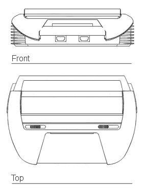
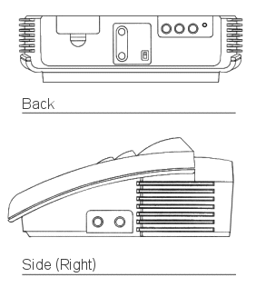
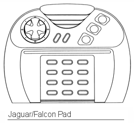
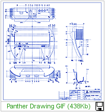
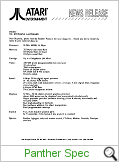

|
1991 - The Atari Panther was
going to be the first new Atari console since the launch of the 7800 by
Atari Inc. in 1984. Although Atari Corp. had re-launched the 7800
in 1986, the company had done little to reinvigorate its games division,
with the majority of its R&D spend being devoted to it's computer
business. By 1990 however, Atari were already making moves to
began a new assault within the games market, which was growing faster
than ever before.
Seeing the growth of Nintendo
and Sega, Atari began designing a new video game console. Previous
to the Panther decision, Atari were also toying with an ST based video
game console, but this wouldn't have competed technically with the newer
consoles now dominating the market. Utilising the graphics
subsystem from its Transputer workstation called "Blossom", Atari
designed a new 32-Bit chip running at 32Mhz which was capable of showing
7,860 colours on the screen at 320 x 200 pixels. It also allowed
zoom scaling which was similar to Nintendo's famous "Mode 7" on it's
Super Nintendo system.
The Panther would have
competed directly with the Sega Megadrive (Genesis) and the Super
Nintendo - it would have been much later to market than those systems,
but Atari felt it could still compete with its proposed hardware
specification, which on paper was at least 2 or 3 times more powerful
than the current systems available. Panther was very close to
actually going into production, but was shelved at the last minute as a
parallel project within Atari showed much more promise and much more
power - that project gave birth to the Atari Jaguar nearly 2 years
later.
For many years it was thought
the unusual prototype "Mirai" might have been one of the proposed
designs for the Panther, although it's pastel shaded buttons were from
the 1987/88 period, which more resemble the design of the Atari XE games
console. Now, over 10 years later, the Atari Historical Society
(www.atarimuseum.com) has found the actual drawings for the casing of the Panther.
|
 |
|
The unit is much smaller than a stock
Jaguar, and as you can see above, it has ports for 2
joysticks/controllers, 2 slide buttons possibly for reset, power etc,
and the same sculpted "air duct" like lines on its side panels, which
are also seen as the rear of the Jaguar. The Cartridges would be
manually inserted flat into the front of the Panther like a front-load
VHS tape recorder (or for those who have used a NES, a little like
that!). |
|
 |
|
On the back of the Panther there is what
seems to be a built in TV connector/UHF box (with Hi/Lo switch for NTSC
markets), 4 circular connectors on the right side, possibly audio
left/right and video, and a curios "mini-din" like sized connector
beside those. To the left there is a removable panel which would
possibly house an expansion connector. On the right side, 2
further circular connectors or ports can be seen, again, it's possible
these were for "other" peripherals or maybe a ComLynx system as detailed
in the official specification sheet (see further down this page to read
the specification in full). |
|
 |
|
As you can see from the overall Panther
design, it is very similar to the Falcon Power Pad above (which would
also be used as the Jaguar Controller). We are pretty sure,
although we have no proof at this point, that this controller would have
been designed in conjunction with the Panther project. The STE and
Falcon used enhanced controller ports as did the Panther (and later, the
Jaguar).
We have prepared a larger view of the
system, based on the original drawings below. Please download and
enjoy. |
|
 |
| |
|
 |
|
 |
:: Atari
Console: Panther To Go ::
In a
sudden change of direction Atari has abandoned it's 32-bit Panther Console in favour of a
revolutionary, 64-bit RISC-based games machine - a design that the company feels sure will
be "the technology leader into the 21st Century".
While
details of the new console, codenamed the Jaguar, are a closely-guarded secret, according
to insiders the Reduced Instruction Set Computer technology involved could allow the
Jaguar to run Virtual Reality games.
The
announcement comes a few weeks after Atari UK's Managing Director
Bob Gleadow stated that
the Panther hardware was complete. At a major press conference held last month,
Gleadow implied that a pre-Christmas launch for the Panther was likely - the final
date would only be governed by the availability of game titles, he said.
Now all
development work on Panther software has been called to a halt by Atari USA's President of
Software Development, Larry Segal.
In a
letter to the software houses that had Panther development systems, Segal explained that
Atari would "forego" the Panther console in favour of "a spectacular game
system that we feel will be capable of being the technology leader into the 21st
Century".
At least
six UK software houses were working on Panther software, but it seems none of them had
actually completed a game when the decision to scrap the project came - less than six
months before the scheduled International launch.
Segal is
keen to maintain their support for the Jaguar: "Those of you who have placed time and
energy behind the Panther will be compensated for your support," he wrote, "we
have no intention of causing you financial distress... we will give you every opportunity
to adopt your development schedules to this new system."
Apparently,
Atari was developing the Panther and Jaguar consoles in parallel, but the Jaguar suddenly
began to overtake it's stable-mate. According to Craig Erickson, Vice President of
Software Development for Atari USA, Panther had reached the stage at which the casing was
ready to go into production, the hardware was ready to go into production and the hardware
engineering was complete.
Erickson
explained: "The Jaguar was progressing faster than we anticipated and we asked
ourselves why were we putting Panther out instead of Jaguar? "At that point we
decided to drop Panther and push all our resources behind Jaguar".
While a
few Jaguar development systems are believed to be in the hands of major USA companies, the
Jaguar console is unlikely to be publicly unveiled this year, according to an Atari
spokesman.
From
"New Computer Express" (weekly) June 1991 |